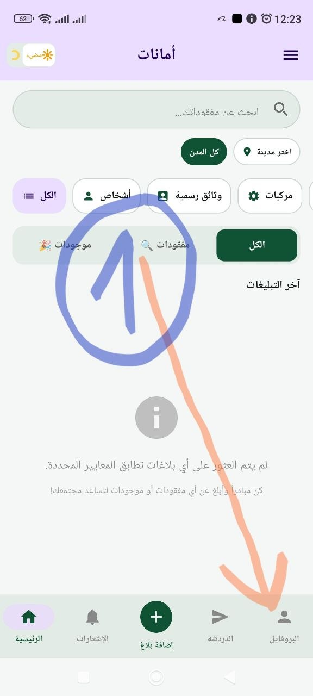
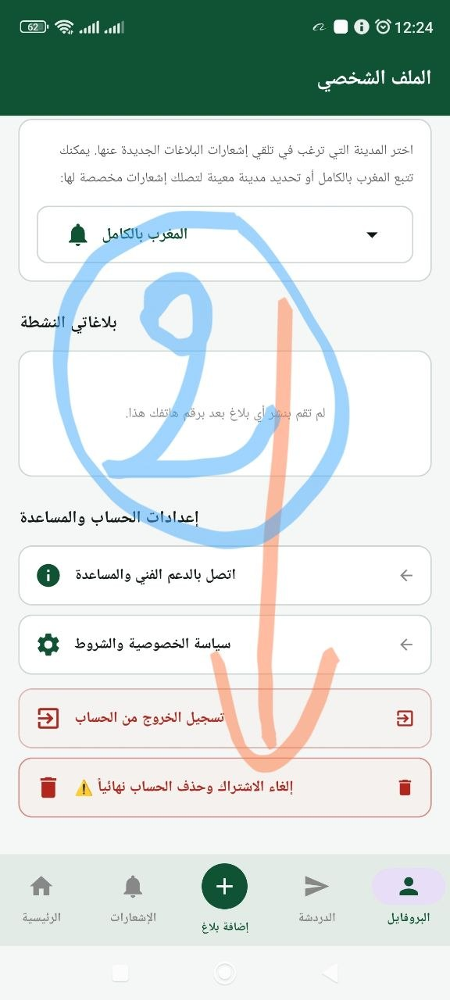
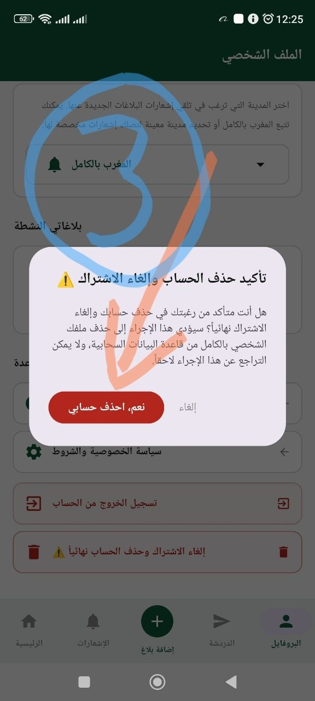

Developer: SAMAD | App: Amanat (أمانات)
In compliance with Google Play Developer Policies, users of Amanat can request and perform full deletion of their account and all associated personal data directly within the application or by requesting support.
You can permanently delete your account and all associated data directly inside the Amanat mobile app by following these 3 simple steps:
Open the app and tap on the "Profile" (البروفايل) icon at the bottom right corner of the navigation bar.

Scroll down to the bottom section under "Account Settings & Support" and tap on "Delete Account Permanently" (إلغاء الاشتراك وحذف الحساب نهائياً).

A confirmation dialog will appear. Tap on "Yes, Delete My Account" (نعم، احذف حسابي) to instantly wipe all data.

When you delete your account, the following data is immediately and permanently erased from our cloud database:
Retention Period: All personal data is deleted immediately (0 days retention) upon clicking confirm. No backup copies of deleted account data are retained on our servers.
If you are unable to access the mobile application, you may request account deletion by navigating to your Profile in-app under "Contact Technical Support & Help".
Conformément aux règles pour les développeurs Google Play, les utilisateurs de l'application Amanat peuvent supprimer définitivement leur compte et l'ensemble de leurs données personnelles directement depuis l'application.
Ouvrez l'application et appuyez sur l'icône "Profil" (البروفايل) en bas à droite de la barre de navigation.
Faites défiler vers le bas jusqu'à la section paramètres, puis appuyez sur "Supprimer le compte définitivement" (إلغاء الاشتراك وحذف الحساب نهائياً).
Dans la boîte de dialogue de confirmation, appuyez sur "Oui, supprimer mon compte" (نعم، احذف حسابي).
Lorsque vous supprimez votre compte, les données suivantes sont immédiatement effacées :
Toutes vos données sont supprimées immédiatement (0 jour de conservation) dès la confirmation. Aucune copie n'est conservée sur nos serveurs.
امتثالاً لمتطلبات وسياسات جوجل بلاي (Google Play) الخاصة بحماية بيانات المستخدمين، يتيح تطبيق أمانات (Amanat) للمطور (SAMAD) إمكانية حذف الحساب والبيانات المرتبطة به بالكامل مباشرة وبسهولة.
يمكنك حذف حسابك وكافة بياناتك نهائياً من داخل تطبيق أمانات باتباع الخطوات التالية:
افتح التطبيق واضغط على أيقونة "البروفايل" في الأسفل جهة اليمين في شريط التنقل.
انزل إلى أسفل الصفحة تحت قسم "إعدادات الحساب والمساعدة" واضغط على زر "إلغاء الاشتراك وحذف الحساب نهائياً".
ستظهر نافذة تأكيد، اضغط على زر "نعم، احذف حسابي" لمسح كل بياناتك فوراً.
عند الضغط على زر الحذف، يتم مسح كافة البيانات التالية فوراً وبشكل دائم من الخوادم السحابية:
فترة الاحتفاظ: يتم حذف جميع البيانات فوراً (0 يوم احتفاظ) بمجرد التأكيد، ولا يتم الاحتفاظ بأي نسخ احتياطية للبيانات المحذوفة على السيرفرات.
إذا واجهتك أي مشكلة، يمكنك التوجه إلى قسم البروفايل والضغط على "اتصل بالدعم الفني والمساعدة" للتواصل معنا مباشرة.